孖仔帮
与您分享双胞胎育儿路上的囧人囧事
点击蓝字
关注我们
文|圆圈妈
背景: 圆圈3岁2个月
地点：广东·惠州·罗浮山
人物：双胞胎兄弟圆圆&圈圈，圆圈爸和圆圈妈，圆圈舅舅
01
先来科普下罗浮山:
罗浮山,位于广东省“惠民之州”惠州市东江之滨，是国家级风景名胜区和国家5A级旅游景区,有 “岭南第一山”“百越群山之祖”的美誉，是广东四大名山之一。
此行去罗浮山的线路：
游客中心文化广场---朱明洞景区大门---狮子峰---索道上站---鹰嘴岩
这是圆圈兄弟第一次去罗浮山，但我第一次去罗浮山是在2005年，正在读高中，罗浮山距离我的高中母校只有37公里。
当时还是怀春少女的我一口气就爬上了飞云顶，丝毫不觉得累，飞云顶上的旖旎风光至今仍然难以忘怀。
可惜那会儿没有Ipone X，256G随便咔嚓~咔嚓。当时还很原始，用的是柯达胶卷，要遇上最美风景才舍得拍一张，O(∩_∩)O哈哈~
工作之后也曾跟着一群驴友走逃票路线，深入深山老林，进入罗浮山景区，但很遗憾没再次爬上飞云顶。
这次趁着国庆黄金周，携老公和儿子一起，计划征服飞云顶，让他们跟我一起回味下高中那会儿的年少轻狂和青葱岁月。
但带着两个刚满3岁的小屁孩，要徒步7公里的山路，实在有点操之过急。
虽然之前带着圆圈有征服梧桐山和银瓶山的光荣事迹做基础，但奈何飞云顶不是吃素的。
结果就是征服飞云顶失败，止步鹰嘴岩。
特发此文纪念下，圆圈兄弟第一次挑战飞云顶失败。
02
此篇罗浮山朱明洞景区旅游攻略适用于国庆黄金周旺季+自驾游+亲子游。
门票：
景区现场执行票价47元，我们在淘宝购票45.5元。
TIPS：门票不包含索道缆车。网络购票需要去售票窗口兑换纸质票方可进入。
交通：
上午10点钟，我们快要到达景区的时候，看到罗浮大道中央树立了一块警示牌，提示景区停车位爆满，而且导航也提示前方严重拥堵。
我们只好听从指示牌的提示，把车开进距离景区3公里的游客服务中心的停车场，坐接驳车到景区。
非常庆幸这个决定，我们坐上接驳车去景区的路上，看到很多私家车无一幸免堵在景区入口动弹不得。
而在交警的指挥下，接驳车得以走绿色通道，避开拥堵路段，非常顺利进入到景区停车场接驳站。
掐指一算，要是圆圈爸继续往前开，加入了堵车队伍，没有两个小时，怕是出不来了。
TIPS：接驳车是免费乘坐的，停车也不用钱，而且大把空位，横着停放都没关系。
若停在景区停车场，还要收费20元。
住宿：
景区大门对面马路原来是一座小山坡，现在全部被铲平，修建了一栋栋山宾馆民宿和饭店餐馆，装潢得非常现代化。
不得不感慨下罗浮山真的变化很大。
住宿价格，没有调查，不便给意见。
吃饭：
从接驳车下来之后，穿过停车场，会经过美食街，全都是卖罗浮山特产，如客家婆山水豆腐花等，还有特色美食和快餐小炒，如土窑鸡等。
完全不愁“冇地方食嘢”
03
进入景区后，我们在景区入闸处领取了一份免费地图后，直奔飞云顶。
山脚下的特色景点，如冲虚古观，葛洪博物馆，东江纵队纪念馆等，已经忽略不计。
进入景区后直接往左手边狮子峰的方向走。
TIPS：有观光车到狮子峰，票价15元。但觉得很坑，终点站是狮子峰山脚下。
我们走大路到达狮子峰，花了40分钟左右，此时已经是下午12点30分了。
在凉亭休息处，吃干粮解决了我们的午餐。
狮子峰往索道上站的途中只有水泥路和一条与水泥路几乎平行的登山道，我们觉得非常不过瘾。
感觉像是逛公园，不像在爬山。
因此当我们沿途看到捷径小路时就很兴奋，专门挑这种原始的小土坡走。
刚开始圆圈兄弟走大马路还哼哼唧唧地没有状态，看到那些很陡峭的小土坡，并得到我们的允许，开心极了，跃跃欲试，企图展示他们小男子汉的雄风。
果然只初生牛犊不怕虎，他们一点都不害怕。
手脚并用往上攀爬，很多大孩子小朋友也被他们带动了，纷纷弃阳关道不走，偏要爬小土坡。
很快每一处小土坡都布满了人类版本的“四驱动物”，恐怕这也是爬罗浮山的一大乐趣吧！
通往飞云顶的路上，一路都有食物供应，完全不愁没吃没喝。每走一段路就有一处小卖部，提供水和食物，价格当然比较贵啦。
但比起背着10瓶水上山，我更愿意高价买水喝。可是带着孩子上山，总是担心他们会饿，不得不多备点他们喜欢吃的零食。
3个半小时之后，我们到达索道上站。
此时是下午3点半左右，索道上站已经有很多人在排队下山了。
04
我们没有在索道上站逗留太久，继续往鹰嘴岩方向走。
沿途看到一个路牌，提示距离飞云顶还有3公里。
额滴亲娘啊！
还好对爬上飞云顶没有多大期望，不然真的被吓到了。我这累死累活地爬了这么久居然被告知还有一半路才到山顶。
终于有点想通了，为什么索道处那么多人了，估计都是冲着飞云顶去的，前半段索道上山，后半段才有力气爬上飞云顶。
事先在罗浮山官网上了解到索道是全开放的缆车，不像张家界那种全封闭式的。
坐过的驴友都笑称，那是史上“最安全”的缆车，没有安全带，护栏还可以随意打开，全程尿点低到极致，不敢造次。
出于一位母亲对潜在危险的高度戒备之心，我决不允许圆圈兄弟坐这样的缆车。
哪怕要我背着哥俩负重上山，我也愿意。
索道上站距离鹰嘴岩不远，继续往上走约10分钟就到了。
鹰嘴岩有凌空的玻璃观景台，风景不错，可以360度无视角看到不远处的飞云顶。看着很近，实际远着呐。
据说一个壮汉，从鹰嘴岩出发也要耗时两个小时，我这拖家带口的，怕是爬到半夜三更也到不了了！
鹰嘴岩之后，我们非常知足返回到索道上站，此时已经是下午5点钟了，把干粮解决掉，打算徒步下山。
即便我冲破层层心理防线去坐缆车，已经没有希望了，因为索道处已经人山人海，停止售票了。
我们下山的时候，一整天没有休息的圆圈依然保持着亢奋的状态，为娘表示很宽慰。
越来越佩服他们的体力了，几乎与我们成人同步啊！
这一路走上来全程没有索抱，还要求我们拉着手，一路冲下山去，还嫌速度不够快，给我们加油。
我已经有点吃不消了，实在搞不懂他们的体力从何而来。
快到狮子峰的时候，他们终于焉了！就像过度消耗电的手机，瞬间黑屏了，圆圈兄弟趴在我们肩膀上秒睡。
05
作为一个爬山资深爱好者，客观点评下我们大惠州的罗浮山。
如果不是要来征服飞云顶，那就不要来了，风景一般。莫说与张家界媲美了，连深圳梧桐山都可以把其比下去。
罗浮山胜在登顶挑战难，这是唯一的卖点，对于登山爱好者来说简直是一大块香饽饽啊！
因为越难征服的山顶越有味道，越让人念念不忘。
就好像一位姿色平庸但气质不凡的高冷美女，越难泡，越想泡…
因此，等圆圈再长大一点，我们还会再来罗浮山挑战飞云顶的！
如果期望不大，只是逛公园休闲消遣，可以来走走，在山脚下逛逛，呼吸下新鲜空气。
若体力不错就往山上走，走到哪就算哪，可是要门票47元，未免太浪费了点。
如果要来拜神许愿，冲虚古观或者黄龙观也是不错的选择，据说还很灵哦。
但都是传说，我当年在冲虚古观许愿金榜题名，结果高考两次都是名落孙山。
O(*￣)￣*)o，我只能呵呵！
这可能跟我的知识水平有关哈！怨不得别人！
END
本文系圆圈妈sgguy-com原创，来源于孖仔帮，专注双胞胎孕期育儿经验分享，著作权归孖仔帮所有。
长按识别二维码关注我们
我猜你肯定喜欢看下面的文章，对不对嘛？关注孖仔帮，回复下方文章前面的数字编号即可阅读。
501: 带着双胞胎去旅行-深圳梧桐山
502: 带着双胞胎去旅行-惠东巽寮湾
503: 带着双胞胎去旅行-香港太平山顶徒步
504: 带着双胞胎去旅行-东莞银瓶山森林公园
505:带着双胞胎去旅行-张家界国家森林公园（一）
506: 带着双胞胎去旅行-张家界国家森林公园（二）
507: 带着双胞胎去旅行-张家界国家森林公园（三）
508: 带着双胞胎去旅行-张家界国家森林公园（四）
509:带着双胞胎去旅行|长沙·橘子洲头
510:带着双胞胎去旅行|珠海·长隆海洋王国—亲子游玩篇
511:带着双胞胎去旅行|珠海·长隆海洋王国—横琴湾酒店住宿篇
512:带着双胞胎去旅行|深圳东部华侨城·茶溪谷
513:带着双胞胎去旅行|珠海圆明新园+珠海歌剧院一日游
514:带着双胞胎去旅行|湖南·郴州·东江湖
近日发现有些平台未经允许转载了圆圈妈的文章，在此声明下：
若喜欢圆圈妈的文章，无条件欢迎大家分享转发到朋友圈。
如需转载至公众号请联系圆圈妈（微信sgguy-com）授权，或扫以下微信二维码。
各位双胎妈妈，更多孖仔帮原创育儿文章请猛戳 "阅读原文" ，或者直接上圆圈妈的个人博客，大把双胎孕期育儿心得经验分享。
阅读原文：
https://www.sgguy.com/twinsbang


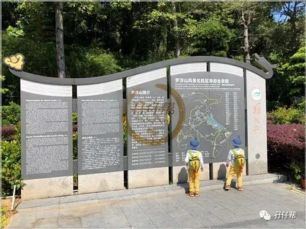
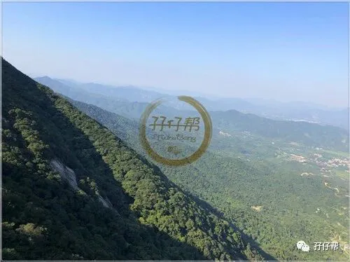
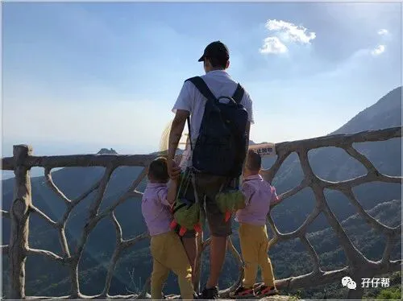

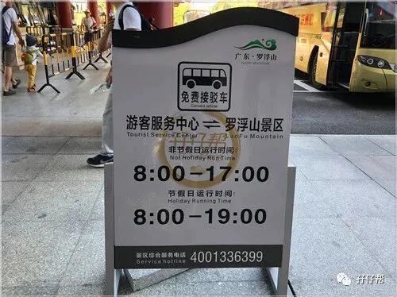
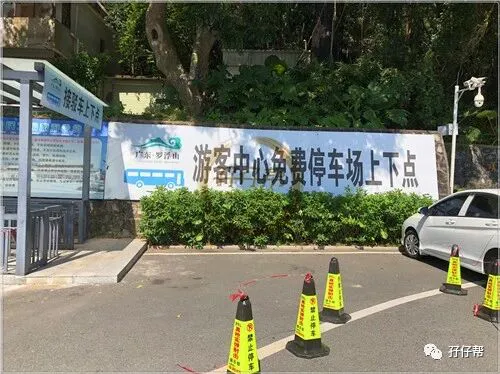
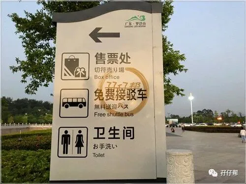
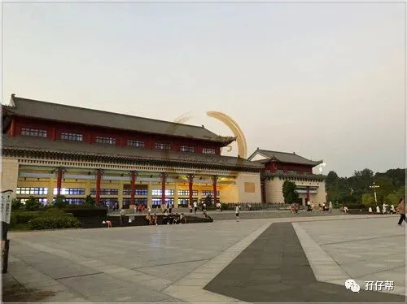
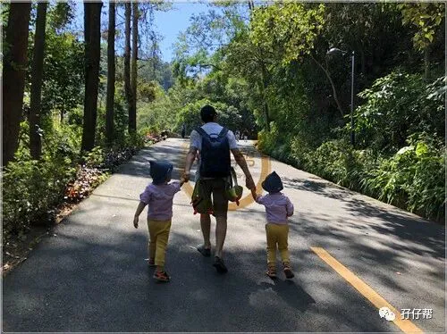
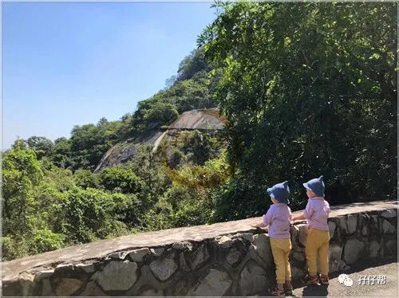
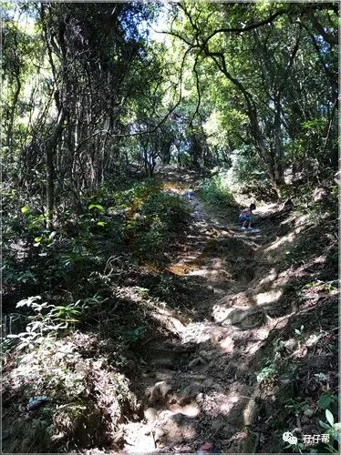
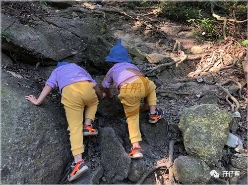
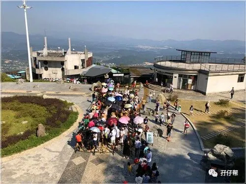
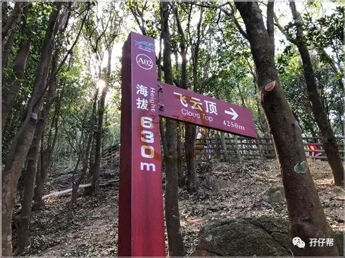
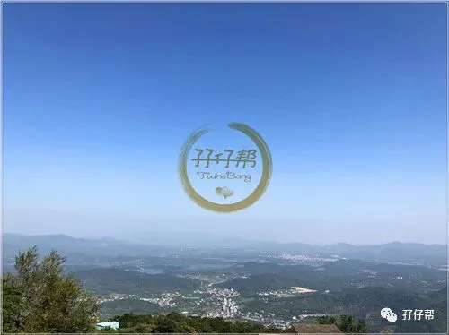
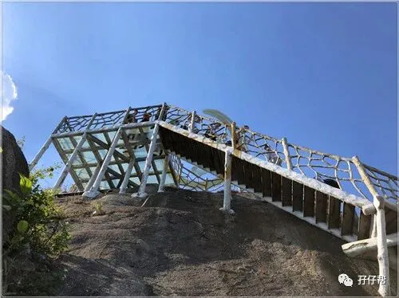
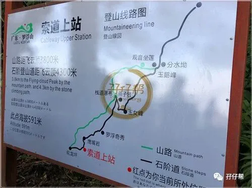
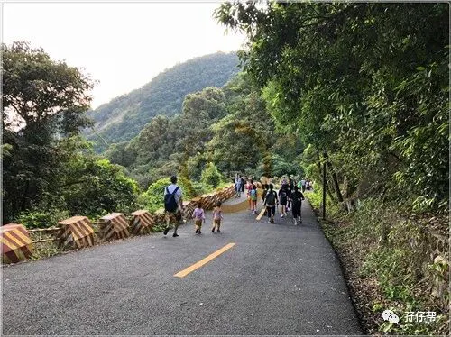
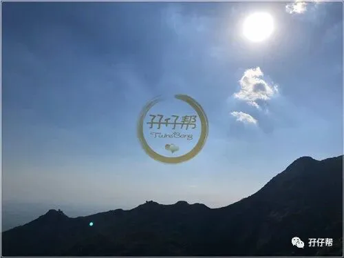